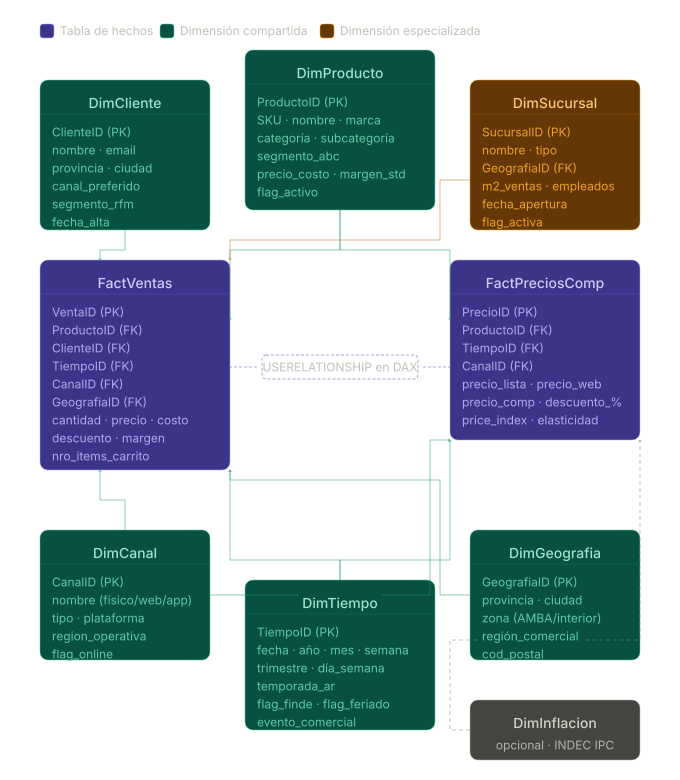

Negocio
Inteligencia comercial
Transformar datos operativos en información útil para analizar ventas, categorías, ticket promedio, canales y comportamiento del cliente.
El proyecto integra datos de e-commerce, retail, benchmarks argentinos, inflación, tipo de cambio y datos sintéticos para construir una visión 360 de ventas, clientes, canales, precios y operación logística.
El objetivo es preparar una base analítica para entender el negocio desde varias dimensiones: qué se vende, dónde, por qué canal, con qué margen, bajo qué contexto económico y con qué señales de satisfacción.
Transformar datos operativos en información útil para analizar ventas, categorías, ticket promedio, canales y comportamiento del cliente.
Combinar Olist, Superstore, CACE, IPC, tipo de cambio y datos sintéticos sin perder trazabilidad ni claridad metodológica.
Preparar tablas confiables para que un tablero pueda explicar ventas, rentabilidad, logística, pricing y contexto económico.
Cada etapa agrega una capa de confianza: primero se comprueba el entorno, luego se crean datos faltantes, después se revisa la calidad y finalmente se valida que las fuentes puedan conectarse.
Se verifica que Python, librerías y archivos puedan utilizarse.
Se crea la capa argentina que los datasets originales no tienen.
Se revisa cada archivo por separado para detectar problemas básicos.
Se comprueba que las tablas se puedan unir correctamente.
Pipeline unificado que genera los 7 archivos CSV listos para Power BI.
Detecta reglas de compra conjunta para explicar venta cruzada y recomendaciones.
Segmenta clientes con K-Means y mide retención por mes de adquisición.
Las técnicas no se usan por decoración: cada una responde a una necesidad concreta del proyecto y reduce un riesgo distinto.
| Técnica | Para qué se utiliza | Cómo contribuye al objetivo |
|---|---|---|
| Inventario de datos | Identificar qué archivos existen, su formato y su tamaño. | Evita trabajar a ciegas y ordena el punto de partida del proyecto. |
| Diagnóstico de calidad | Revisar nulos, duplicados, tipos de datos y claves. | Permite decidir qué archivos están listos y cuáles requieren limpieza. |
| Datos sintéticos con Faker | Crear clientes, sucursales y datos argentinos ficticios. | Completa información faltante sin usar datos privados reales. |
| Semillas aleatorias | Generar siempre los mismos datos sintéticos al ejecutar el notebook. | Hace que el trabajo sea reproducible y defendible. |
| Joins entre tablas | Unir órdenes, ítems, productos y traducciones. | Construye la base de ventas que alimentará el modelo analítico. |
| Integridad referencial | Comprobar que las claves de una tabla existen en la tabla relacionada. | Evita perder ventas o crear relaciones inconsistentes. |
| IPC y tipo de cambio | Agregar contexto macroeconómico a precios y ventas. | Permite comparar valores en escenarios con inflación y variación cambiaria. |
| Modelo estrella/galaxia | Organizar hechos y dimensiones para análisis en dashboards. | Facilita KPIs claros, filtros consistentes y consultas eficientes. |
| Reglas de asociación | Aplicar Apriori sobre órdenes multi-ítem para encontrar combinaciones de categorías o productos. | Agrega una capa de venta cruzada al dashboard mediante soporte, confianza y lift. |
| K-Means | Segmentar clientes con recencia, frecuencia, monto total y ticket promedio. | Permite agrupar clientes por comportamiento real de compra y comparar perfiles comerciales. |
| Análisis de cohortes | Agrupar clientes por mes de primera compra y medir retención por mes de vida. | Agrega una mirada longitudinal sobre fidelización y repetición de compra. |
| Esquema SQL v2 | Documentar tablas Dim*/Fact*, claves primarias, claves foráneas y tipos compatibles con importación CSV. | Permite llevar el modelo de Power BI a SQL Server sin perder trazabilidad de relaciones. |
| Forward fill en tipo de cambio | Completar cotizaciones faltantes (fines de semana y feriados) con el último valor conocido. | Garantiza que cada transacción Olist tenga un tipo de cambio asignado sin inventar valores. |
| Índice IPC acumulado | Construir un índice mensual acumulado a partir de variaciones porcentuales del INDEC. | Permite dividir el precio nominal por el índice y obtener precios en pesos constantes (base dic-2016). |
| Conversión BRL → ARS vía USD | Usar el dólar como moneda puente: price_ars = price_brl × (ARS/USD) ÷ (BRL/USD). | Resuelve la ausencia de un tipo de cambio BRL/ARS directo en los datasets disponibles. |
| Imputación de meses sin IPC | Asignar índice = 1.0 a los meses sep-dic 2016 que no tienen cobertura del INDEC. | Conserva las ventas sin descartarlas y documenta claramente el supuesto de base aplicado. |
| Validación de nulos críticos | Controlar que columnas esenciales no queden vacías antes de guardar. | Da confianza sobre la tabla final fact_ventas.csv antes de usarla en reportes. |
La estructura combina tablas de hechos, que registran eventos medibles, con dimensiones, que explican esos eventos desde distintas miradas del negocio.
Dos tablas de hechos comparten dimensiones: fact_ventas_final conecta a 6 dimensiones directas, y fact_precios_comp accede a productos vía dim_categorias, tabla puente de 10 filas que evita una relación N:N directa.
Esquema galaxia con 2 tablas de hechos y 8 dimensiones (7 descriptivas + 1 puente). Separa eventos medibles de descripciones del negocio para habilitar análisis multidimensional en Power BI.

Seleccioná una etapa para ver qué aporta al proyecto. Esta vista resume la lógica completa sin necesidad de abrir cada notebook.
Comprueba que la computadora puede ejecutar el proyecto: versiones, librerías, visualización y lectura inicial de archivos. Contribuye evitando errores tempranos por dependencias faltantes o rutas incorrectas.
Construye la capa argentina del proyecto: clientes, sucursales, canales, ventas base, medios de pago, entregas y precios de competencia. Contribuye completando lo que las fuentes originales no traen.
Revisa cada fuente por separado para detectar nulos, duplicados, claves, tipos de datos y rangos. Contribuye definiendo qué se puede usar, qué se debe limpiar y qué decisiones tomará el ETL.
Comprueba que las tablas se conectan correctamente. Contribuye validando la ruta hacia FactVentas: órdenes, ítems, productos, categorías, fechas, IPC y tipo de cambio.
Pipeline unificado de 10 bloques que parte desde los archivos raw y las dimensiones sintéticas argentinas hasta generar los 7 archivos CSV listos para Power BI. Incorpora toda la lógica de transformación en un único flujo reproducible.
fact_ventas_final.csv.Analiza órdenes multi-ítem para descubrir combinaciones de compra conjunta. Contribuye incorporando reglas de asociación al tablero, útiles para promociones, recomendaciones y surtido.
fact_ventas_final.csv y dim_productos.csv, une categorías CACE por product_id y filtra órdenes con 2 o más ítems.mlxtend usando soporte, confianza y lift, con fallback de soporte cuando el dataset es muy disperso.market_basket_reglas.csv, market_basket_reglas_enriquecidas.csv, market_basket_heatmap.png y market_basket_top10.png.Construye una capa de inteligencia de clientes: primero segmenta por comportamiento RFM con K-Means y después analiza retención por cohorte de primera compra.
recencia, frecuencia, monto_total y ticket_promedio por ClienteID, escala las variables y entrena K-Means con k = 4.clustering_clientes.csv y gráficos de elbow/silhouette, centroides, distribución, dispersión y perfil demográfico por cluster.cohortes_retencion.csv, cohortes_resumen.csv, cohortes_matriz_ancha.csv y cohortes_heatmap.png para medir retención longitudinal.Estas validaciones muestran que el proyecto no solo genera resultados, sino que también controla la calidad de lo que produce.